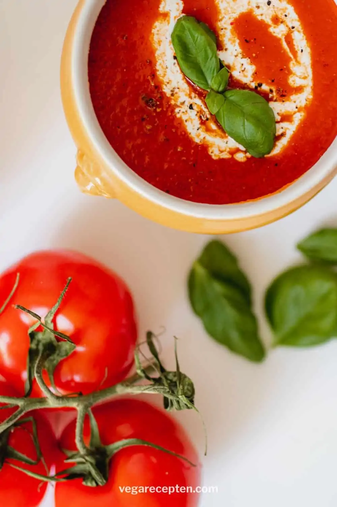

Voorgerecht: Tomatensoep
__________________________________________________________________________________________________
Ingrediënten
- 400 gram gepelde tomaat
- 1 zakje gesnipperde ui
- teen knoflook
- olijfolie
- water
- kookroom
- groentebuillonblokje
Bereidingswijze
1. Snipper en fruit de ui in een pannetje met 1 el olijfolie.
2. Voeg de tomaat toe en eventueel de knoflook en bak deze 5 minuutjes.
3. Voeg het hete water en halve bouillonblokje toe en laat een paar minuten koken.
4. Pureer de soep met een staafmixer en laat de soep nog even doorkoken. Hoe langer je de soep laat sudderen,
hoe smaakvoller hij wordt.
5. Voeg naar smaak peper en zout toe.
6. Serveer de soep eventueel met (plantaardige) kookroom of (soja) crème fraîche. Ook lekker: met scheutje
kokosmelk.

Hoofdgerecht: Gehaktbrood
__________________________________________________________________________________________________
Ingrediënten
1 rode paprika
1 groene paprika
1 ui
2 tenen knoflook
50 gram bacon
1/2 bosje peterselie
400 gram mager rundergehakt
50 gram paneermeel
1 ei
1 blikje tomatenpuree
1 theelepel tabasco
peper
Bereidingswijze
1. Warm de oven voor op 175 graden celcius
2. maak de paprika's schoon en snijd ze in kleine stukjes. maak de knoflook en ui schoon en snijd ze in
verschillende stukjes. Snij de bacon in kleine reepjes.
3.Doe het gehakt,paprika,ui,bacon,peterseolelie,paneermeel,ei,tomatenpuree,tabasco en peper in een kom. Pers
de tenen knfolook erboven uit en kneed goeed totdat alle ingredienten zijn gemend.
4.Druk het mengsel in een cakevorm en bak deze ongeveer 1 uur in de oven.
5.Haal de vorm uit de oven. laat even afkoelen en haal het daarna uit de vorm. Serveer het gehaktbrood op een
schotel.

Nagerecht: Sorbet
__________________________________________________________________________________________________
Ingrediënten
limonade siroop met cassissmaak
100 gram blauwe bessen
125 gram aardbeien
100 gram bramen
hertog ijssalon aardbeien meringue
300ml appelcider zonder alcohol
4 champagne glazen
Werkwijze
1. Schenk de cassissiroop in de 4 glaze
2. Verdeel het fruit erover en schep een bol Hertog Aardbeien Merinque ijs bovenop het fruit.
3. Schenk de cider op het fruit en serveer direct.